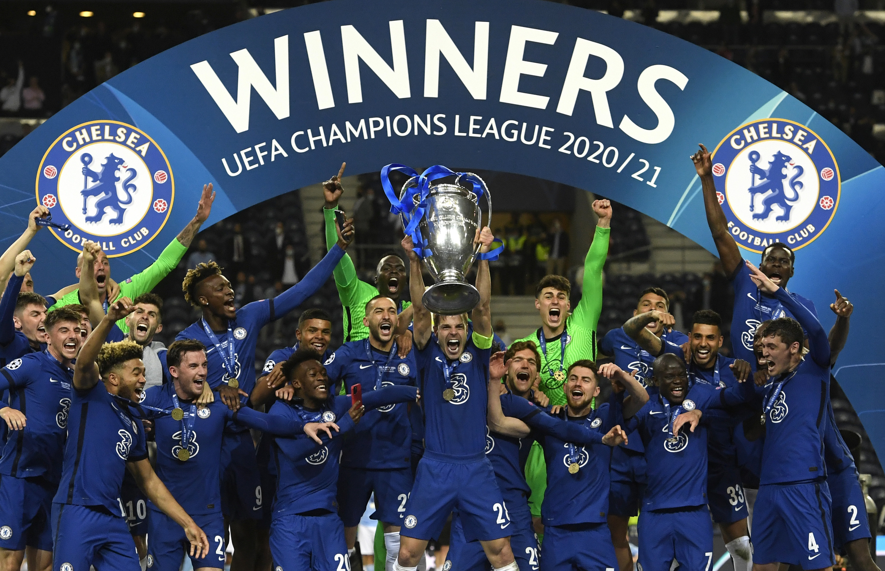
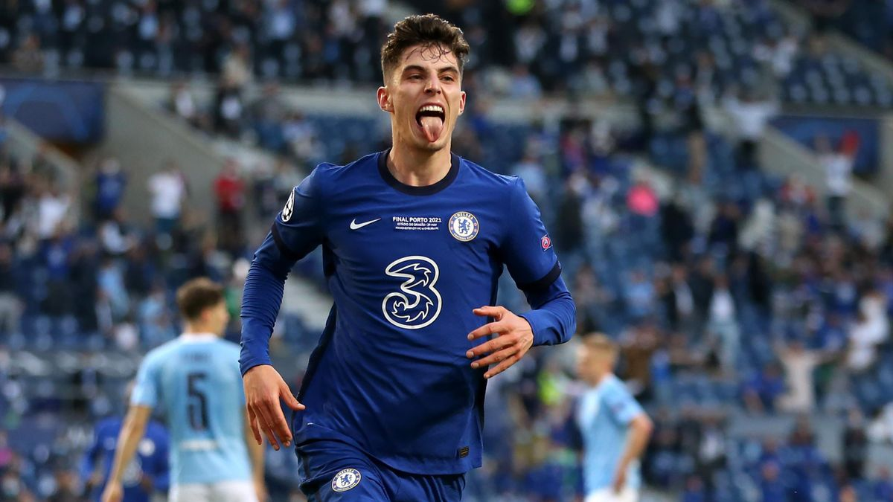
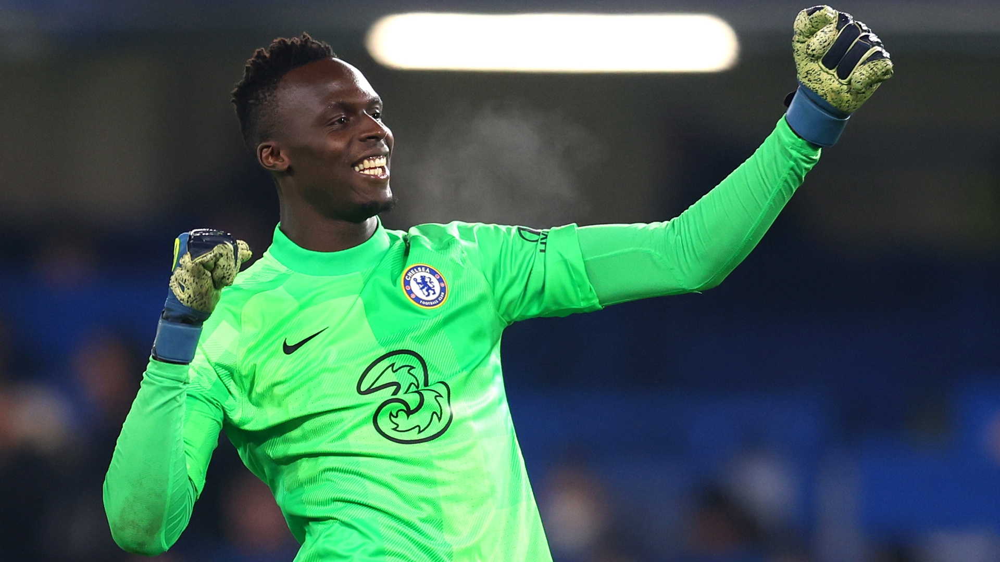
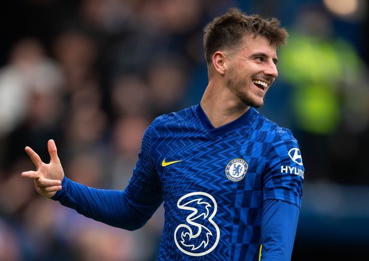
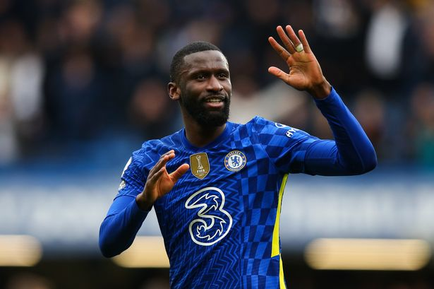

This website describes some important aspects of the team's UCL campaign and how beautifully it ended.

Key players involved.

Kai Havertz scored the only goal in the champions league final. It was his first season
and he admitted it was not easy for him.

Edouard Mendy made a lot of important saves in the 20/21 campaign. He ended the season as the
GK with the most cleansheets.

Mason Mount, who was the fan's best player of the season, assisted Kai in the champions league
final to bring the trophy to North London.

Rudiger perfomed some heroics on the final day, which helped us retain our 1-0 lead and eventually
win the title. He is now a Real Madrid player.
This is an exciting short note of the experience of a fan during the UEFA champions league final of Manchester
City vs. Chelsea, Paris 2021. It was one of the best moments of my life. Winning the UCL trophy for the second time.
- Harvey Specter
Call to action! It's time!
Sign up for our newsletter by clicking on the button right over there!